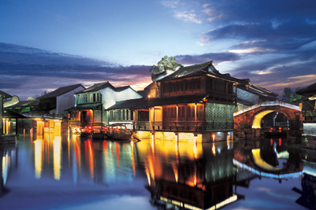
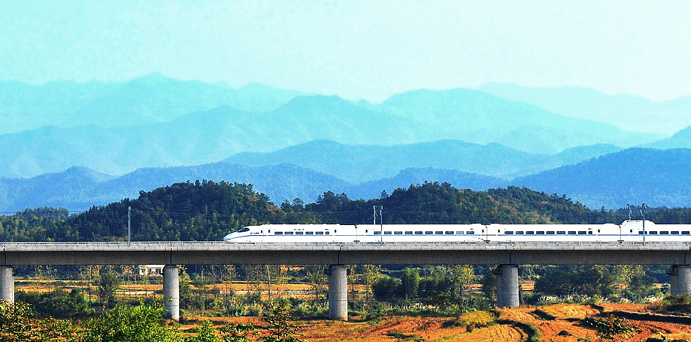
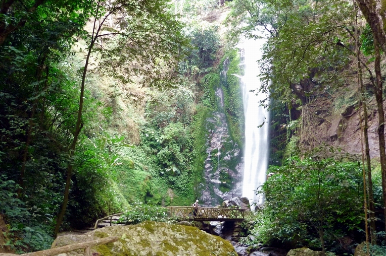
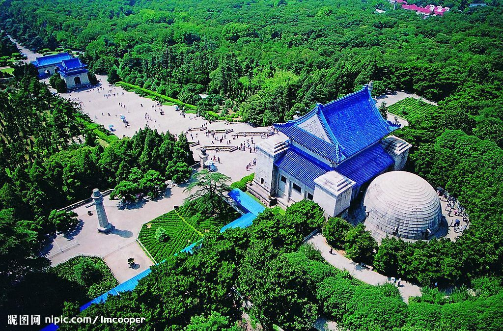
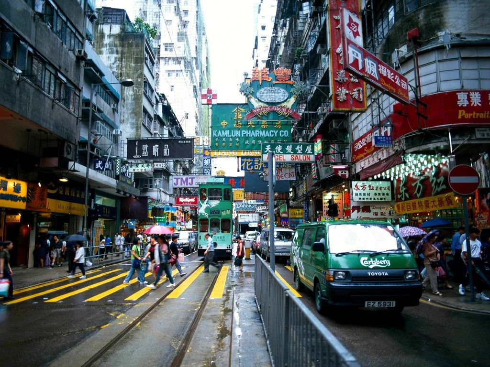

|  | 乌镇 我去过很多的欧洲城市，看到很多很多的城市，全部都是古建筑的古城，心中产生了疑问，就问当地人：“欧洲发生了无数次战争的炮火，特别人类最大的两次文明的浩劫，战争把整个欧洲无数的城市都摧毁了，在历史的照片中看到的全部都是支离破碎的残垣断壁，这些城市何以现在还是那样地展现了千百年来历史的保存？” 我再问：“我走遍了中世纪的城市，为什么看不到任何破败的陋窟？” |
|  |
这个世界有太多的奇妙，太多的想象，也有太多的陌生，太多的我们未知和遇至不及的地方。很多的新知，很多的精彩，很多的探求。最为庆幸的是，我们生活在如此一个精彩纷呈，万象更新，变化转折的时代，其中地理大跨度速度大飞越的京广新高铁，又以一个追求穷极端峰的新姿向我们展示这个“时代换了模样”的特征。为了最值得纪念的京广新高铁给我们时空变化带来的大冲击。国旅总社和铁道部运输局联手打造 “新高铁，新旅程，新概念” 。让我们生活开辟了一个新的空间，让我们在今天看到了昨天和明天，以往和将来，真实的梦想 |
|  |
“世人不知天南路，山阻水隔是梦洲”。由昆明出发，一路向南，翻山越岭过大川，前往石屏、红河、西双版纳等地，一路行去，不由顿叹，那却是一番世人往往失之交臂而不晓的绝美之旅。一路之上，忽而车辆萦盘直上，登顶彩云之巅，参观云上的村落人家，看云卷云舒，村镇都在云蒸霞蔚的彩云间，无尽的梯田隐约在云飞雾漫的山腰下。忽又旋转直下，曲折回绕在深川河谷之中，空谷幽暗，万木蔽天。田园是锦绣文章，村落有亘古情由，云天是大好气象，河山有千万述说。所有见识，振感心灵，感获颇多，受益最大。 |
|  | 阅江楼与黄鹤楼、岳阳楼、南昌阁、鹳雀楼齐名，但建筑在狮子山顶上的阅江楼却更加高耸巍峨，形势壮观。楼前城门城墙、牌坊、阙门等完整，楼内展品有相关楼的介绍和郑和航海史、古代航海船的模型和介绍翔实。登楼可以极目阅览大江，俯瞰秦淮河以及整个南京城。保存完好的郑和的花园家庙、北静王府、妈祖靖海庙等也近在楼前。特别是朱元璋的阅江楼记，讲述了为历史赋予他要拓疆靖边谋四海为一统，为何建都华夏，却偏隅东南，选择南京的宏大理念，阐述了时代要求开创以舟船桅樯取代走马拉车...... |
 |
扬州是个很写意的地方。自远古大禹鼎定九州时，扬州就作为华夏的南方的总称，其包孕吴越湘楚，总揽江南，一直是富庶的代名词。魏晋后期糜扉文化和隋炀帝兴起的大规模修建24私园和游宴之乐，唐宋的歌舞诗会，直至元明清的书画词曲艳情弹唱都以扬州为对象和文化都会。会。今日扬州又最好地保存了这一文化底蕴和众多的历史古迹，园林特色各异。现今的扬州也是一个不可多得的祥和静宜的地方，没有喧哗纷杂，缺少高楼大厦，但草木繁盛，粉墙黛瓦，烟色朦胧，非常写意，是可以打开尘封在心底的历史的记忆.... |
 |
无锡，春秋时代锡惠山出产大量的锡，当时著名的秦国弓、吴王剑，其中制作兵器和铸钱的青铜，主要都是来源于锡惠山的锡。这里也因此战乱不断，发生的故事很多。什么干将莫哀鱼肠剑，都铸在有锡的山中，秦始皇统一中国后巡游到此处，痛恨山中有锡，说“有锡乱，无锡宁”，将此地改名为“无锡”。从此，锡惠山就再也无锡可采。也因由此，2300年无锡从未再发生任何战事，成为天下奇事。城市依傍烟波浩淼的太湖，中国的大运河直穿城市。历来是中国的风景名胜。 |
|  | “有一份喜悦，让您分享，有更多的精彩，与您同往。” 时尚精彩、遐逅多惠，港岛自由放飞的享受，品质和地段的超爽实惠，中国国旅“打包特惠”倾力推荐，最佳选择： 富豪香港酒店，富豪九龙酒店，富豪东方酒店，沙田丽豪酒店，富豪机场酒店 |